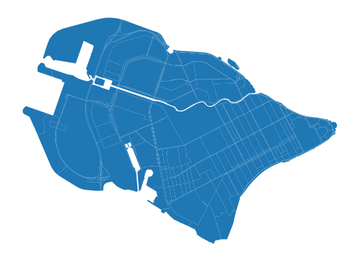
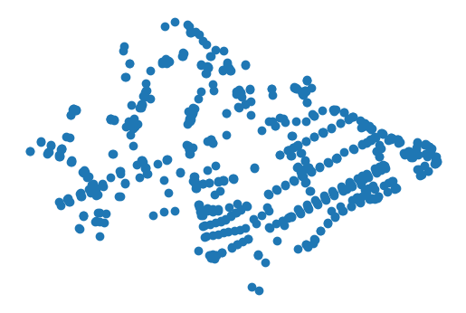
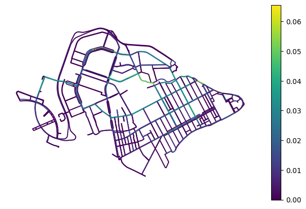

Network
[1]:
import geopandas as gpd
blocks_gdf = gpd.read_parquet('./../data/blocks.parquet')
blocks_gdf.head(2)
[1]:
| geometry | land_use | is_living | build_floor_area | living_demand | living_area | share_living | business_area | share_business | site_area | ... | capacity_bus_station | capacity_bus_stop | capacity_pier | capacity_animal_shelter | capacity_military_kom | capacity_prison | capacity_landfill | capacity_plant_nursery | capacity_greenhouse_complex | capacity_warehouse | |
|---|---|---|---|---|---|---|---|---|---|---|---|---|---|---|---|---|---|---|---|---|---|
| id | |||||||||||||||||||||
| 0 | POLYGON ((354918.622 6625258.829, 354901.464 6... | None | True | 43840.686518 | 50.641057 | 30688.480678 | 2.199357 | 13152.205840 | 0.942581 | 804466.712114 | ... | 0 | 0 | 0 | 0 | 0 | 0 | 0 | 0 | 0 | 0 |
| 1 | POLYGON ((355412.142 6623378.149, 355411.7 662... | transport | True | 10294.395525 | 53.114392 | 2177.690063 | 0.431105 | 8116.705462 | 1.606820 | 23173.129862 | ... | 0 | 0 | 0 | 0 | 0 | 0 | 0 | 0 | 0 | 0 |
2 rows × 83 columns
Filter blocks getting only local ones for the example
[2]:
import osmnx as ox
local_crs = blocks_gdf.crs
polygon = ox.geocode_to_gdf('R1114252', by_osmid=True).to_crs(local_crs)
blocks_gdf = blocks_gdf[blocks_gdf.intersects(polygon.union_all())]
blocks_gdf.plot().set_axis_off()

Calculating accessibility matrices
[3]:
from blocksnet.relations import get_accessibility_graph
Getting graphs
[4]:
graph_drive = get_accessibility_graph(blocks_gdf, 'drive')
2025-06-08 15:38:00.477 | WARNING | blocksnet.relations.accessibility.graph.core:get_accessibility_graph:16 - CRS do not match IDUEDU required crs. Reprojecting
2025-06-08 15:38:00.551 | INFO | iduedu.modules.drive_walk_builder:get_drive_graph_by_poly:91 - Downloading drive graph from OSM, it may take a while for large territory ...
2025-06-08 15:38:01.897 | WARNING | iduedu.utils.utils:remove_weakly_connected_nodes:37 - Removing 24 nodes that form 23 trap components. These are groups where you can enter but can't exit (or vice versa). Keeping the largest strongly connected component (663 nodes).
[5]:
graph_walk = get_accessibility_graph(blocks_gdf, 'walk')
2025-06-08 15:38:01.927 | WARNING | blocksnet.relations.accessibility.graph.core:get_accessibility_graph:16 - CRS do not match IDUEDU required crs. Reprojecting
2025-06-08 15:38:01.969 | INFO | iduedu.modules.drive_walk_builder:get_walk_graph:217 - Downloading walk graph from OSM, it may take a while for large territory ...
Calculating distances from blocks to nodes
[6]:
from blocksnet.relations import accessibility_graph_to_gdfs
nodes_gdf, _ = accessibility_graph_to_gdfs(graph_drive)
nodes_gdf.plot().set_axis_off()

[7]:
from iduedu import get_adj_matrix_gdf_to_gdf
blocks_to_nodes = get_adj_matrix_gdf_to_gdf(blocks_gdf, nodes_gdf, graph_walk)
[8]:
blocks_to_nodes.head()
/home/vasilstar/masterplanning/.venv/lib/python3.10/site-packages/pandas/io/formats/format.py:1458: RuntimeWarning: overflow encountered in cast
has_large_values = (abs_vals > 1e6).any()
[8]:
| 0 | 1 | 2 | 3 | 4 | 5 | 6 | 7 | 8 | 9 | ... | 653 | 654 | 655 | 656 | 657 | 658 | 659 | 660 | 661 | 662 | |
|---|---|---|---|---|---|---|---|---|---|---|---|---|---|---|---|---|---|---|---|---|---|
| id | |||||||||||||||||||||
| 112 | 3410.0 | 3602.0 | 3526.0 | 3528.0 | 3408.0 | 3850.0 | 3856.0 | 3586.0 | 2840.0 | 3434.0 | ... | 2690.0 | 3186.0 | 4052.0 | 3222.0 | 4356.0 | 4544.0 | 4156.0 | 4572.0 | 4952.0 | 4972.0 |
| 113 | 2096.0 | 2288.0 | 2212.0 | 2212.0 | 2094.0 | 2348.0 | 2354.0 | 2270.0 | 1179.0 | 1774.0 | ... | 3318.0 | 3806.0 | 4708.0 | 3880.0 | 5212.0 | 5340.0 | 5012.0 | 5364.0 | 4676.0 | 5200.0 |
| 114 | 3920.0 | 4116.0 | 4036.0 | 4038.0 | 3918.0 | 4364.0 | 4368.0 | 4096.0 | 3352.0 | 3944.0 | ... | 3200.0 | 3698.0 | 4564.0 | 3734.0 | 4864.0 | 5056.0 | 4668.0 | 5080.0 | 5464.0 | 5484.0 |
| 115 | 3046.0 | 3238.0 | 3160.0 | 3160.0 | 3040.0 | 3298.0 | 3302.0 | 3218.0 | 2128.0 | 2724.0 | ... | 2974.0 | 3470.0 | 4368.0 | 3540.0 | 4732.0 | 4920.0 | 4532.0 | 4944.0 | 5160.0 | 5284.0 |
| 215 | 4116.0 | 4312.0 | 4232.0 | 4232.0 | 4112.0 | 4556.0 | 4560.0 | 4292.0 | 3758.0 | 4352.0 | ... | 3124.0 | 3620.0 | 4452.0 | 3658.0 | 4372.0 | 4728.0 | 4148.0 | 4752.0 | 5392.0 | 5380.0 |
5 rows × 663 columns
Calculating distances from nodes to nodes
[9]:
nodes_to_nodes = get_adj_matrix_gdf_to_gdf(nodes_gdf, nodes_gdf, graph_drive)
[10]:
nodes_to_nodes.head()
/home/vasilstar/masterplanning/.venv/lib/python3.10/site-packages/pandas/io/formats/format.py:1458: RuntimeWarning: overflow encountered in cast
has_large_values = (abs_vals > 1e6).any()
[10]:
| 0 | 1 | 2 | 3 | 4 | 5 | 6 | 7 | 8 | 9 | ... | 653 | 654 | 655 | 656 | 657 | 658 | 659 | 660 | 661 | 662 | |
|---|---|---|---|---|---|---|---|---|---|---|---|---|---|---|---|---|---|---|---|---|---|
| 0 | 0.000 | 17.375 | 371.50000 | 315.250000 | 215.0000 | 664.0 | 659.5 | 349.000 | 1181.0 | 1254.0 | ... | 3626.0 | 3888.0 | 4696.0 | 3860.0 | 5392.0 | 5592.0 | 5080.0 | 5576.0 | 4276.0 | 5016.0 |
| 1 | 37.750 | 0.000 | 354.00000 | 297.750000 | 197.6250 | 647.0 | 642.0 | 331.750 | 1163.0 | 1237.0 | ... | 3610.0 | 3870.0 | 4680.0 | 3842.0 | 5376.0 | 5576.0 | 5060.0 | 5556.0 | 4256.0 | 4996.0 |
| 2 | 267.500 | 285.000 | 0.00000 | 5.519531 | 107.1875 | 354.5 | 350.0 | 39.375 | 1281.0 | 944.5 | ... | 3894.0 | 4156.0 | 4964.0 | 4128.0 | 5660.0 | 5860.0 | 5344.0 | 5844.0 | 4544.0 | 5284.0 |
| 3 | 323.750 | 341.000 | 56.15625 | 0.000000 | 163.3750 | 349.0 | 344.5 | 33.875 | 1275.0 | 939.0 | ... | 3950.0 | 4212.0 | 5020.0 | 4184.0 | 5716.0 | 5916.0 | 5400.0 | 5900.0 | 4600.0 | 5340.0 |
| 4 | 160.375 | 177.750 | 532.00000 | 475.500000 | 0.0000 | 824.5 | 820.0 | 509.500 | 1341.0 | 1415.0 | ... | 3788.0 | 4048.0 | 4856.0 | 4020.0 | 5552.0 | 5752.0 | 5240.0 | 5736.0 | 4436.0 | 5176.0 |
5 rows × 663 columns
Calculating OD matrix
[11]:
services_dfs = []
for column in [c for c in blocks_gdf.columns if 'capacity_' in c]:
services_df = blocks_gdf[[column]].rename(columns={column:'capacity'})
services_dfs.append(services_df)
[12]:
from blocksnet.analysis.network import origin_destination_matrix
od_mx = origin_destination_matrix(blocks_gdf, blocks_to_nodes, nodes_to_nodes, services_dfs)
2025-06-08 15:38:19.243 | INFO | blocksnet.analysis.network.origin_destination.core:_validate_input:81 - Validating input data
2025-06-08 15:38:19.244 | INFO | blocksnet.analysis.network.origin_destination.core:_calculate_diversity:51 - Calculating diversity and density
2025-06-08 15:38:19.633 | INFO | blocksnet.analysis.network.origin_destination.core:_calculate_attractiveness:59 - Calculating attractiveness
2025-06-08 15:38:19.640 | INFO | blocksnet.analysis.network.origin_destination.core:_calculate_nodes_weights:32 - Identifying nearest nodes to blocks
2025-06-08 15:38:19.646 | INFO | blocksnet.analysis.network.origin_destination.core:_calculate_nodes_weights:37 - Calculating weights
2025-06-08 15:38:19.655 | INFO | blocksnet.analysis.network.origin_destination.core:_calculate_nodes_weights:43 - Distributing
2025-06-08 15:38:19.659 | INFO | blocksnet.analysis.network.origin_destination.core:_calculate_od_mx:72 - Calculating origin destination matrix
Calculating roads congestion
[16]:
from blocksnet.analysis.network import road_congestion
graph_congestion = road_congestion(od_mx, graph_drive)
2025-06-08 15:41:45.987 | INFO | blocksnet.analysis.network.road_congestion.core:road_congestion:18 - Calculating shortest path
2025-06-08 15:41:47.616 | INFO | blocksnet.analysis.network.road_congestion.core:road_congestion:21 - Evaluating congestion
100%|██████████| 663/663 [00:44<00:00, 15.04it/s]
[17]:
_, edges_gdf = accessibility_graph_to_gdfs(graph_congestion)
edges_gdf.head()
[17]:
| length_meter | time_min | geometry | congestion | ||
|---|---|---|---|---|---|
| 0 | 1 | 17.379 | 0.017 | LINESTRING (348610.46 6648540.586, 348595.032 ... | 0.058759 |
| 1 | 339 | 8.024 | 0.008 | LINESTRING (348595.032 6648548.588, 348588.653... | 0.019130 |
| 340 | 245.966 | 0.246 | LINESTRING (348595.032 6648548.588, 348581.331... | 0.040963 | |
| 2 | 3 | 5.515 | 0.008 | LINESTRING (348859.015 6648442.978, 348857.583... | 0.000718 |
| 4 | 107.189 | 0.107 | LINESTRING (348859.015 6648442.978, 348847.224... | 0.048565 |
[18]:
edges_gdf.plot('congestion', legend=True, figsize=(8,5)).set_axis_off()
